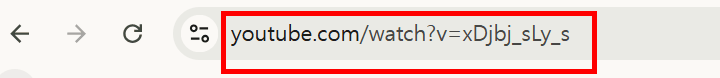
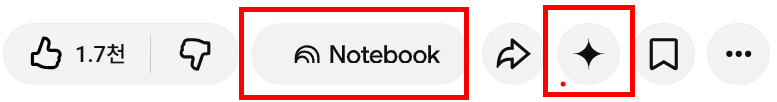

Gemini Notebook(NotebookLM) — 내 자료에 근거해 묻고 만들기
교사가 올린 자료만 근거로 답하고, 학습 가이드·퀴즈·오디오·마인드맵을 만듭니다
흐름: ① 주제 하나로 노트북을 만든다 → ② 소스를 고르고 정리한다 → ③ 묻고 출처를 확인한다 → ④ 스튜디오에서 결과물을 만든다 → ⑤ 동료·학생과 나눈다.
시작하기 전에
- 학교 계정으로 연 notebooklm.google.com (컴퓨터 웹 권장)
- 가상 소스 자료 — 내려받아 그대로 소스로 올립니다.
unit-algorithm.txt(중2 정보 알고리즘 단원 수업 자료)school-handbook.txt(가상 학교 업무 안내)parent-letters.txt(가상 가정통신문 3편)assessment-guide.txt(가상 수행평가 안내문)
- 이름: 2026-07-16부터 NotebookLM의 이름이 Gemini Notebook으로 바뀌는 중입니다. 기존 주소와 공유 링크는 자동으로 연결됩니다. 이 페이지는 두 이름을 같은 뜻으로 씁니다.
- 누가 쓰나: 모든 Workspace for Education 에디션의 Core 서비스이며, 모든 연령이 쓸 수 있습니다. 만 18세 미만에게는 더 엄격한 콘텐츠 정책이 적용됩니다. 학교 계정 데이터는 사람의 검토나 AI 학습에 쓰이지 않는다고 구글이 안내합니다.
- 만 18세 이상 전용 기능: Deep Research, 시네마틱 동영상 개요(영어만), 새 인포그래픽 스타일, 슬라이드 수정 등. 교사는 쓸 수 있고 중학생은 쓸 수 없습니다.
- 공유: 교육용 계정의 노트북은 학교(조직) 안에서만 공유됩니다.
- 학생이 직접 만드는 수업 노트북: Classroom에서 학생이 수업 자료로 노트북을 만드는 기능은 고등교육·만 18세 이상 대상입니다(2026-04). 중학생에게는 교사가 만든 노트북을 배정합니다(사례 10).
- 메뉴 이름(
소스,채팅,스튜디오등)은 영어 도움말을 옮긴 것입니다. 학교 계정 화면 문구가 다르면 화면을 따르세요.
1 화면 구조 — 소스 · 채팅 · 스튜디오
- 왼쪽 · 소스올린 자료 목록
체크한 소스만 답의 근거가 됨 - 가운데 · 채팅자료에 대해 묻기
답에 출처 번호 - 오른쪽 · 스튜디오결과물 만들기
오디오·보고서·퀴즈 등 - 노트좋은 답을 저장
다시 소스로 쓸 수도 있음
휴대폰 앱에서는 노트, 마인드맵, 보고서, 데이터 표를 만들거나 볼 수 없다고 안내되어 있습니다. 연수는 컴퓨터로 합니다.
2 소스 — 무엇을, 얼마나 올리나
| 올릴 수 있는 것 | 학교에서 쓰는 예 |
|---|---|
| Google Docs, Slides(100장까지) | 수업 슬라이드, 학습지, 교과협의 문서 |
| PDF, Word(.docx), PowerPoint(.pptx), 텍스트(.txt, .md), CSV | 교육과정 문서, 연수 자료, 가상 자료 |
| 웹 주소(URL), 공개 YouTube 주소 | 교육청 공지, 교육 영상(자막 기반) |
| 오디오(MP3, WAV 등) | 본인 강의 녹음(학생 목소리 없는 것) |
| 복사한 글, 이미지(잘 안 읽힐 수 있음) | 짧은 메모, 판서 사진 |
- 한도: 소스 하나는 50만 단어 또는 200MB까지. 노트북 하나에 소스 50개(무료 기준, 에디션에 따라 더 많음). 복사 방지된 PDF는 올라가지 않습니다.
- 웹 주소: 페이지의 글자만 가져옵니다. 그림·영상·유료 페이지는 들어오지 않습니다.
- 소스 고르기: 왼쪽 소스 목록의 체크를 끄면 그 소스는 답에서 빠집니다. "이 문서에서만 찾아 줘"가 필요할 때 씁니다.
- 소스 이름: 올린 뒤 이름을
2026_중2정보_알고리즘_수업자료처럼 바꾸면 출처를 볼 때 헷갈리지 않습니다. - 웹에서 소스 찾기: 소스 패널의
찾아보기(Discover)나빠른 조사(Fast Research)로 주제를 설명하면 웹 자료를 추천받아 가져올 수 있습니다. 여러 웹사이트를 훑어 긴 보고서를 만드는Deep Research는 만 18세 이상만 됩니다.
3 묻는 법 — 질문 유형 8가지
질문 끝에 "근거가 된 부분을 함께 보여 줘"를 붙이면 출처 확인이 쉬워집니다. 좋은 답은 노트에 저장해 둡니다.
| 유형 | 질문 예 (unit-algorithm.txt 기준) | 쓰는 때 |
|---|---|---|
| 찾기 | 마름모 기호는 무엇을 뜻하나요? | 자료 속 사실 확인 |
| 표로 정리 | 순서도 기호 5가지를 기호·이름·쓰임 표로 정리해 줘 | 학습지·판서 준비 |
| 비교 | 선택 구조와 반복 구조의 차이를 예와 함께 비교해 줘 | 헷갈리는 개념 정리 |
| 오개념 | 이 자료에서 학생이 헷갈릴 만한 점을 뽑고, 바로잡는 질문을 하나씩 만들어 줘 | 수업 설계 |
| 쉬운 말 | 알고리즘의 조건을 초등학생도 이해하게 3문장으로 설명해 줘 | 수준 낮추기 |
| 문항 | 이 자료로 형성평가 5문항을 만들고, 문항마다 근거 문장을 붙여 줘 | 평가 준비 |
| 연결 | 수행평가 안내문(assessment-guide)의 평가 요소가 이 수업 자료의 어느 부분과 연결되는지 찾아 줘 | 소스 두 개 이상 엮기 |
| 빠진 것 | 이 자료만으로 답할 수 없는 질문을 3개 알려 줘 | 자료 보완 점검 |
채팅 설정(Configure chat)에서 대화 스타일(예: 기본, 학습 가이드)과 답의 길이를 바꿀 수 있다고 안내되어 있습니다. 에디션에 따라 일부는 유료 기능으로 표시될 수 있으니 화면에서 확인하세요.
4 스튜디오 — 만들 수 있는 결과물
| 결과물 | 할 수 있는 것 | 학교에서 |
|---|---|---|
| 오디오 개요 | 두 진행자가 자료를 대화로 설명. 한국어 포함 80개 이상 언어. 형식(기본·간단·비평·토론), 길이(짧게·기본, 길게는 영어만), 집중할 주제를 프롬프트로 지정 | 결석생 보충, 복습 듣기, 토론 수업 도입 |
| 동영상 개요 | 슬라이드형 설명 영상. 설명형·짧은 영상(약 60초). 시네마틱은 영어·만 18세 이상 | 단원 도입 영상 |
| 마인드맵 | 자료의 개념 구조를 가지로 펼침. 가지를 누르면 그 부분을 질문 | 단원 구조 한눈에 보기 |
| 보고서 | 학습 가이드, 브리핑 문서, FAQ, 직접 만들기. Docs로 내보내기, 표는 Sheets로 내보내기 | 학습지, 연수 요약, 학부모 FAQ |
| 플래시카드·퀴즈 | 난이도 선택, "알아요/몰라요" 표시, 진행 상황 저장, 틀린 것만 다시 | 단원 복습 |
| 인포그래픽 | 자동 또는 스타일 선택(새 스타일 10가지는 만 18세 이상) | 게시물·안내 그림 |
| 슬라이드 | 자료로 발표 슬라이드 생성, PDF·PPTX 내보내기, 장별 수정(만 18세 이상) | 수업 슬라이드 초안 |
2026-09 업데이트로 녹음기, 상호작용 학습 개요, 새 퀴즈 형식이 더해졌다고 안내되었습니다. 화면에 따라 이름과 위치가 다를 수 있습니다.
5 공유와 학생 배정
| 방법 | 할 수 있는 일 | 주의 |
|---|---|---|
| 뷰어로 공유 | 소스와 노트를 읽고 채팅 | "채팅만 보기"로 소스를 숨겨도 접근 권한이 완전히 막히지는 않음 |
| 편집자로 공유 | 소스 추가·삭제, 노트·결과물 만들기, 다시 공유 | 교과협의회 공동 노트북에만 |
| Classroom 배정 | 과제·자료에 첨부하면 학생에게 자동 공유. 학생은 소스를 읽기 전용으로 보고 질문. 교사는 열람 수 확인 | 관리자가 학생 NotebookLM 사용을 허용해야 열림 (사례 10) |
6 노트북 실습 9가지
N1은 모두 함께 하고, 나머지는 수업용(N2~N4, N8, N9)과 업무용(N5~N7) 중에서 골라 합니다.
| 실습 | 노트북 | 배우는 것 | 가상 소스 |
|---|---|---|---|
| N1 | 교육과정·수업 자료 질문 노트북 | 소스 올리기, 질문 유형, 출처 확인, 노트 저장 | unit-algorithm, assessment-guide |
| N2 | 단원 학습 가이드 + 플래시카드·퀴즈 | 보고서, Docs 내보내기, 퀴즈 난이도 | unit-algorithm |
| N3 | 한국어 오디오 개요 | 형식·길이·집중 주제 지정 | unit-algorithm |
| N4 | 마인드맵·인포그래픽 | 단원 구조 시각화, 오류 확인 | unit-algorithm |
| N5 | 학교 업무 안내 질문 노트북 | "자료에 없으면 없다" 확인, 동료 공유 | school-handbook |
| N6 | 학부모 FAQ 만들기 | 여러 문서 엮기, FAQ 보고서 | parent-letters |
| N7 | 웹에서 수업 자료 찾기 | 찾아보기·빠른 조사, 출처 검증 | (웹) |
| N8 | 학생 배정용 복습 노트북 설계 | 소스 고르기, 학생 안내문, 열람 확인 | unit-algorithm |
| N9 | 유튜브 영상으로 수업 자료 만들기 (김대식 교수 강연 사례) | Gemini 앱에 영상 주소로 요약·부분 고르기·수업 설계, 노트북 활동지·퀴즈, 확장 프로그램, 구글 렌즈 | (공개 유튜브 영상) |
N1 교육과정·수업 자료 질문 노트북 — 처음 만들기
🤖 방법 A · 노트북에서 묻기 추천
새 노트북을 만들고 이름을2026_중2정보_알고리즘으로 바꿉니다. 노트북 하나에 주제 하나가 원칙입니다.소스 추가로 두 파일을 올립니다. 올린 뒤 소스 이름을 알아보기 쉽게 바꿉니다.- 아래 질문을 하나씩 넣고, 답의 숫자(출처)를 눌러 왼쪽에 원문이 표시되는지 봅니다.
- 좋은 답은
노트에 저장합니다.
1. 순서도 기호 5가지를 기호·이름·쓰임 표로 정리해 줘 2. 선택 구조와 반복 구조의 차이를 학교생활 예와 함께 비교해 줘 3. 학생이 헷갈릴 만한 점을 뽑고, 바로잡는 질문을 하나씩 만들어 줘 4. 수행평가 안내문의 평가 요소가 수업 자료의 어느 부분과 연결되는지 표로 보여 줘 5. 이 자료로 형성평가 5문항을 만들고 문항마다 근거 문장을 붙여 줘 6. 이 자료만으로는 답할 수 없는 질문을 3개 알려 줘
⌨️ 방법 B · 직접 하기
자료를 Drive에 두고 Ctrl+F로 찾아 Docs에 정리합니다. 여러 문서를 엮는 질문(4번)은 시간이 많이 듭니다.
🔁 방법 C · 노트북이 막혀 있을 때
Gemini 앱에 파일을 첨부하고 "첨부한 자료에 있는 내용만으로 답해 주세요. 없으면 없다고 하세요"를 붙여 묻습니다. 출처 번호는 나오지 않으니 원문 대조를 더 꼼꼼히 합니다.
- 출처 번호를 눌러 원문과 답이 일치하는지 봅니다. 출처 없는 문장은 쓰지 않습니다.
- 5번 문항의 정답은 교사가 직접 풀어 확인합니다.
- PDF의 "쪽"은 인쇄 쪽수와 다를 수 있으니 원문에서 다시 봅니다.
- 교과 성취기준 문서 질문 노트북
- 학교 평가 계획서와 성취기준 대조
- 연수 자료 요약·질문 노트북
- 교과서 단원 지도서 노트북
- 교과협의회 자료 모음 노트북
N2 단원 학습 가이드 + 플래시카드·퀴즈
🤖 방법 A · 스튜디오에서 만들기 추천
- 스튜디오에서
보고서 → 학습 가이드를 고릅니다. 직접 만들기를 고르면 아래 요청을 넣습니다. - 결과를
Docs로 내보내기해 학습지 모양으로 다듬습니다. 플래시카드와퀴즈를 만들고 난이도를 바꿔 봅니다. 카드에서 "알아요/몰라요"를 눌러 틀린 것만 다시 보는 흐름을 확인합니다.
중학교 2학년 학생이 읽는 단원 학습 가이드를 만들어 주세요. - 핵심 용어 6개와 한 줄 뜻 - 순서도 기호 표 - 헷갈리기 쉬운 점 4가지와 바른 설명 - 스스로 확인하기 문제 5개(정답은 맨 끝에 따로) - 교과서 수준을 넘는 내용은 넣지 않기
⌨️ 방법 B · 직접 하기
Docs에 학습지 틀을 만들고 단원 자료에서 용어와 문제를 옮겨 적습니다. 퀴즈는 사례 4처럼 Forms로 만듭니다.
🔁 방법 C · 스튜디오 결과물이 안 보일 때
채팅에 위 요청을 그대로 넣고 답을 노트로 저장한 뒤 Docs에 붙여넣습니다.
- 학습 가이드의 용어 뜻이 교과서 표현과 같은지 봅니다.
- 퀴즈 정답이 하나뿐인지, 해설이 자료와 맞는지 직접 풀어 봅니다.
- 시험 대비 요약 노트
- 영어 단어 플래시카드
- 과학 개념 확인 퀴즈
- 사회 용어 카드
- 보충 수업용 쉬운 학습지
N3 한국어 오디오 개요 — 형식·길이·집중 주제
🤖 방법 A · 맞춤 오디오 만들기 추천
- 출력 언어가 한국어인지 확인합니다(설정의 출력 언어, 또는 오디오 만들기 화면의 언어).
- 스튜디오의
오디오 개요옆 연필(맞춤 설정)을 눌러 형식과 길이를 고르고, 집중할 내용을 아래처럼 적습니다. - 같은 자료로 형식만 바꿔 두 개를 만들어 비교합니다: ① 기본(설명) ② 토론
중학교 2학년 학생이 듣는 복습용입니다. 선택 구조와 반복 구조의 차이에 집중하고, 학교생활 예를 2개 이상 들어 주세요. 어려운 영어 용어는 쓰지 말고, 마지막에 스스로 답해 볼 질문 2개로 끝내 주세요.
"모든 문제를 순서도로 먼저 그려야 한다"는 주장에 대해 두 진행자가 찬성과 반대로 토론해 주세요. 중학생 수준의 근거를 쓰고, 결론은 내리지 말고 학생에게 질문을 던지며 끝내 주세요.
⌨️ 방법 B · 직접 하기
교사가 3분 정도 핵심을 녹음해 Classroom에 올립니다. 오디오 개요보다 정확하지만 시간이 듭니다.
🔁 방법 C · 오디오가 막혀 있을 때
채팅에서 "두 사람이 대화하는 대본으로 설명해 줘"를 요청해 글로 된 대본을 학생에게 줍니다.
- 끝까지 듣습니다. 대화로 바꾸면서 강조점이 바뀌거나 자료에 없는 예가 들어갈 수 있습니다.
- 용어 발음과 뜻이 교과서와 같은지 봅니다.
- "길게"는 영어에서만 된다고 안내되어 있으니, 한국어는 짧게·기본 중에서 고릅니다.
- 체험학습 사후 보충 오디오
- 독서 토론 도입(비평 형식)
- 시험 전 핵심 요약(간단 형식)
- 학부모 설명회 자료 요약 오디오
- 영어 지문 듣기(출력 언어 영어)
N4 마인드맵·인포그래픽 — 단원 구조 한눈에
🤖 방법 A · 스튜디오에서 만들기 추천
마인드맵을 만들고, 가지를 펼쳐 봅니다. 가지(예: "반복 구조")를 누르면 그 내용으로 채팅 질문이 만들어집니다.인포그래픽을 만들고, 스타일을 바꿔 한 번 더 만듭니다. 요청란이 있으면 아래를 넣습니다.- 마음에 드는 결과를 내려받아 슬라이드나 게시물에 넣습니다.
중학교 2학년 교실 게시용 인포그래픽입니다. 알고리즘의 세 가지 구조(순차·선택·반복)를 각각 학교생활 예 하나와 함께 보여 주세요. 글자는 한국어로 짧게, 사람 얼굴과 실제 상표는 넣지 마세요.
⌨️ 방법 B · 직접 하기
Slides의 도형으로 개념도를 그리거나, 학생과 함께 칠판에 마인드맵을 그립니다.
🔁 방법 C · 시각 자료가 안 될 때
채팅에 "개념 구조를 들여쓰기 목록으로 보여 줘"를 요청해 Slides에서 도형으로 옮깁니다.
- 인포그래픽 속 글자를 확대해 한 글자씩 봅니다. 한글이 깨지거나 철자가 틀리는 경우가 있습니다.
- 순서도 기호 모양이 실제와 다르게 그려지지 않았는지 봅니다(예: 판단 기호가 마름모인지).
- 역사 사건 흐름 마인드맵
- 과학 개념 관계도
- 국어 문학 갈래 정리
- 학교 행사 안내 인포그래픽
- 안전 수칙 게시물
N5 학교 업무 안내 질문 노트북 — "자료에 없으면 없다"
🤖 방법 A · 질문하고 공유하기 추천
- 새 노트북
2026_업무안내에 소스를 올립니다. - 아래 질문을 넣습니다. 특히 5번처럼 자료에 없는 질문에 "자료에 없다"고 답하는지 봅니다.
- 동료 교사를 뷰어로 공유합니다. 동료는 소스를 바꾸지 못하고 질문만 할 수 있습니다.
1. 학생이 결석하면 담임은 무엇을 언제까지 해야 하나요? 2. 교외체험학습 신청과 보고서 제출 기한을 표로 정리해 줘 3. 컴퓨터실 예약이 겹치면 누가 먼저인가요? 4. 회신이 필요한 가정통신문의 회신 기한은 어떻게 정하나요? 5. 체험학습은 1년에 며칠까지 쓸 수 있나요?
⌨️ 방법 B · 직접 하기
업무 안내 문서에 목차와 책갈피를 만들어 공유합니다.
🔁 방법 C · 공유가 막혀 있을 때
자주 묻는 질문의 답을 노트로 저장한 뒤, 노트를 Docs로 옮겨 공유 드라이브에 둡니다.
- 5번에 그럴듯한 일수(예: "20일")를 지어내면 그 답은 쓰지 않습니다. 노트북은 자료 밖 지식을 섞을 수 있습니다.
- 규정이 바뀌면 소스를 새 파일로 바꾸고 옛 소스는 지웁니다. 옛 소스가 남으면 답이 섞입니다.
- 학업성적관리규정 질문 노트북
- 학교폭력 업무 절차 안내(사례 내용 제외)
- 정보보안 지침 노트북
- 신규 교사 길잡이 노트북
- 교육청 공문 모음 노트북
N6 학부모 FAQ 만들기 — 여러 문서를 한 번에
🤖 방법 A · FAQ 보고서 추천
- 새 노트북에 소스를 올리고, 스튜디오
보고서 → FAQ를 만듭니다. 원하는 형식이 아니면 직접 만들기에 아래 요청을 넣습니다. Docs로 내보내기한 뒤, 날짜와 요일을 원문과 대조합니다.- 학급 사이트(사례 11)나 가정통신문 부록으로 씁니다.
학부모가 자주 물을 질문 8개와 답으로 FAQ를 만들어 주세요. - 답에는 날짜(요일), 준비물, 회신 기한, 방법을 원문 그대로 씁니다. - 원문에 없는 내용(비용 액수, 연락처 등)은 [학교 확인]으로 남깁니다. - 마지막에 11월 일정표(날짜 | 내용 | 해야 할 일)를 붙입니다.
⌨️ 방법 B · 직접 하기
통신문 세 편을 나란히 놓고 일정표를 Sheets로 정리합니다.
🔁 방법 C · 보고서가 안 될 때
채팅에 같은 요청을 넣고 답을 노트로 저장해 Docs에 붙여넣습니다.
- 요일을 원문과 대조합니다. 날짜를 옮기면서 요일이 바뀌는 실수가 잦습니다.
- "입장료는 학교에서 부담"을 "무료"처럼 다른 말로 바꾸었는지 봅니다. 학부모 안내는 원문 표현을 지킵니다.
- 학기 초 학부모 안내 FAQ
- 수련활동 FAQ
- 진학 설명회 FAQ
- 방과후학교 FAQ
- 교사용 행사 체크리스트
N7 웹에서 수업 자료 찾기 — 찾아보기·빠른 조사
🤖 방법 A · 웹 자료 찾아 가져오기 추천
- 새 노트북의 소스 패널에서
찾아보기또는빠른 조사를 고르고 아래처럼 주제를 설명합니다. 웹 대신 Drive를 고르면 내 드라이브에서 찾습니다. - 추천된 자료(최대 10개)의 요약을 읽고, 공공기관·교육기관·출처가 분명한 자료만 골라 가져옵니다.
- (교사, 선택)
Deep Research로 긴 조사 보고서를 받아 봅니다. 결과 보고서와 함께 인용·비인용 자료 목록이 나옵니다. - 가져온 소스로 N1처럼 질문합니다.
중학교 2학년 정보 수업 '인공지능과 윤리' 단원 준비 자료를 찾고 있습니다. 청소년이 학교생활에서 겪는 인공지능 활용 사례와 윤리 쟁점을 다룬 자료, 정부·교육기관·공공기관이 낸 한국어 자료를 우선 찾아 주세요.
⌨️ 방법 B · 직접 하기
검색으로 자료를 찾아 주소를 하나씩 소스 추가 → 웹사이트로 넣습니다.
🔁 방법 C · 찾아보기가 안 될 때
Gemini 앱에서 자료를 찾아 출처 주소를 받은 뒤, 주소를 직접 소스로 넣습니다.
- 추천 자료의 원래 웹페이지를 열어 날짜와 기관을 확인합니다. 오래되었거나 개인 블로그면 빼습니다.
- 웹 소스는 글자만 들어옵니다. 그림·표가 핵심인 자료는 원문을 따로 봅니다.
- 저작권: 수업에 쓰는 인용은 출처를 표시하고, 학생 배포물에 원문을 통째로 옮기지 않습니다.
- 환경 교육 자료 모음
- 진로 직업 정보 노트북
- 지역 역사 자료 노트북
- 교과 연계 시사 자료
- 교사 연수 주제 사전 조사
N8 학생 배정용 복습 노트북 설계
🤖 방법 A · 노트북을 학생용으로 다듬어 배정 추천
- 학생용 노트북을 따로 만듭니다. 교사용 노트북에는 평가 자료·정답이 섞여 있을 수 있기 때문입니다.
- 소스는 학생이 봐도 되는 것만 넣습니다: 수업 자료, 학습 가이드(N2). 정답·채점 기준은 넣지 않습니다.
- 노트북 첫 화면에 보일 학생 안내를 노트로 만들어 둡니다(아래 예시).
- Classroom
수업 과제 → 만들기 → 자료(또는 과제의첨부)로 노트북을 붙입니다. - 테스트 학생 계정으로 열어 보고, 며칠 뒤 수업 과제 페이지에서 몇 명이 열었는지 확인합니다.
[이 노트북 사용법] 1. 수업 자료에 대해 궁금한 것을 물어보세요. 답 끝의 숫자를 누르면 근거가 된 문장이 보입니다. 2. 이렇게 물어보세요: "선택 구조의 예를 하나 더 알려 줘", "내가 만든 순서도 설명이 맞는지 질문으로 확인해 줘" 3. 숙제를 대신 써 달라는 요청은 하지 마세요. 생각을 돕는 질문을 받으세요. 4. 이름, 전화번호 같은 개인정보는 입력하지 마세요. 5. 답이 이상하면 선생님께 알려 주세요.
⌨️ 방법 B · 직접 하기
수업 자료와 자주 묻는 질문을 Classroom 자료로 게시하고, 질문은 비공개 댓글로 받습니다.
🔁 방법 C · 학생 노트북 사용이 막혀 있을 때
교사 노트북에서 학습 가이드와 플래시카드 내용을 Docs로 내보내 Classroom 자료로 줍니다.
- 학생처럼 "숙제 대신 써 줘", "시험 답 알려 줘"를 물어보고 어떻게 답하는지 미리 봅니다. 문제가 있으면 소스를 줄이거나 학생 안내를 고칩니다.
- 노트북을 고치면 배정된 모든 반에 바로 반영됩니다. 수업 중에는 고치지 않습니다.
- 시험 대비 복습 노트북
- 독서 활동 질문 노트북(작품 해설 자료)
- 실험 안전 수칙 질문 노트북
- 수행평가 안내 질문 노트북(심화 A의 Gem 대신)
- 전학생용 단원 따라잡기 노트북
N9 유튜브 영상으로 수업 자료 만들기 — 김대식 교수 강연 영상 사례
- 1 · Gemini 앱영상 요약
(영상 시간 포함) - 2 · Gemini 앱중학생에게 좋은
부분 고르기 - 3 · Gemini 앱바이브 코딩
1차시 수업 설계 - 선택 · 노트북활동지·퀴즈·
사실/주장 표 - 4 · 교사영상 시간을 눌러
직접 확인
유튜브 화면에서는 아래 빨간 상자 세 곳과 크롬의 구글 렌즈를 씁니다.

youtube.com/watch?v=…를 복사해 Gemini 앱 대화창(방법 A)이나 노트북 소스(방법 A-2)에 붙여넣습니다.
- Gemini 앱 + 영상 주소: 교사 기록에서 학교 계정 Gemini 앱이 영상 주소를 받아 내용을 요약하고, 답마다 영상 시간([04:09] 같은 형식)을 붙인 것을 확인했습니다. Gemini 앱이 유튜브를 읽으려면 앱 설정의 YouTube 연결이 켜져 있어야 하고, 학교 관리자가 막아 둘 수 있습니다. 교육용 계정 제공 여부를 밝힌 공식 문서는 찾지 못했습니다.
- ① 영상 주소 → 노트북: 공개 유튜브 영상의 자막(자동 자막 포함)을 읽어 소스로 씁니다. 화면·그림은 읽지 않습니다. 비공개 영상이나 자막이 없는 영상은 "스크립트를 사용할 수 없음"으로 실패합니다.
- ② Notebook 버튼: 유튜브·구글의 기본 기능이 아니라 교사가 설치한 크롬 확장 프로그램 "YouTube to NotebookLM"이 붙인 버튼입니다(교사 화면으로 확인).
- ③ Gemini 질문 버튼: 유튜브 도움말 기준 로그인한 사용자 중 나이 기준을 충족하고, 지원하는 언어·국가에서, 일부 영상에만 나타납니다. 교사 화면에서 한국어 창("이 동영상에 대해 물어보세요")을 확인했습니다.
- ④ 구글 렌즈(크롬): 화면 일부를 골라 글자를 복사·번역·검색합니다. 학교 관리자가 크롬 정책으로 렌즈·AI 모드를 끌 수 있습니다.
🤖 방법 A · Gemini 앱에 영상 주소를 넣고 세 번 묻기 추천 ✅ 기본 계정
- 유튜브에서 김대식 교수 출연 영상을 열고, 설명란의 스크립트 표시로 자막이 있는지 확인한 뒤 주소(①)를 복사합니다. 주소 뒤의
&t=,&list=는 지웁니다. - gemini.google.com을 학교 계정으로 열고 새 채팅을 시작합니다.
- 요청 1을 영상 주소와 함께 넣습니다. 답에 붙은 영상 시간을 눌러 실제 장면이 맞는지 두세 곳 확인합니다.
- 같은 대화에서 요청 2로 중학생에게 설명하기 좋은 부분을 고르게 하고, 그중 하나를 골라 요청 3으로 수업안을 받습니다.
- 수업안을 아래 🧪 검수 항목대로 고친 뒤, 답 아래 공유·내보내기 → Docs로 내보내기로 문서를 만듭니다.
[유튜브 영상 주소] 이 영상 내용을 요약해 주세요. - 핵심 주제 4가지, 주제마다 2~3줄 - 각 내용 끝에 그 말이 나오는 영상 시간을 [분:초]로 - 강연자의 의견·전망과 확인할 수 있는 사실을 구분해서
실제 기록에서는 "영상 내용을 요약해줘" 한 줄만 써도 주제 4가지와 영상 시간을 받았습니다. 조건을 붙이면 수업에 쓰기 쉬운 형태로 나옵니다.
- 패스트 팔로워(추격자) 방식의 한계: 선진국을 따라가며 성장한 방식은 정답이 없는 AI 시대에 맞지 않으니 먼저 시도해야 한다 [04:09]~[06:14]
- 인터넷의 중심이 검색에서 대화로: AI에게 말하면 필요한 앱을 찾거나 즉석에서 만들어 주는 시대(바이브 코딩) [18:16]~[18:23]
- 빅테크 지형 변화와 GPU 인프라 과제: GPU를 확보해도 데이터센터·전력망·AI 서비스 생태계가 함께 필요 [20:00]~[24:21]
- 피지컬 AI라는 기회: 숙련공의 움직임을 학습하는 AI 로봇, 제조 현장의 공정 데이터가 경쟁력 [25:12]~[30:08]
이 내용 가운데 중학생에게 설명하기 좋은 부분 2가지를 추천해 주세요. - 고른 까닭 - 중학생 말로 바꾼 설명 포인트 3개 - 학생에게 던질 질문 1개 - 근거가 되는 영상 시간 [분:초]
교과를 정해 두면 더 잘 고릅니다. 예: "중학교 2학년 정보 수업에 쓸 부분"
- 바이브 코딩 — "말 한마디로 나만의 게임 만들기": 어려운 프로그래밍 언어 대신 AI에게 쉬운 말로 부탁해 프로그램을 만드는 방식. 질문: "너라면 AI한테 어떤 게임이나 앱을 만들어 달라고 하고 싶니?"
- 피지컬 AI와 숙련공 — "로봇에게 장인의 손기술을 가르친다면": 로봇이 물병 하나 잡기도 어려운 까닭, 사람의 움직임을 보고 배우는 AI 로봇, 조선소·제조 공장(울산·창원 등) 숙련공의 데이터. 질문: "네 움직임을 따라 하는 로봇에게 어떤 기술을 가르치고 싶니?"
바이브 코딩과 관련된 내용으로 중학교 [2]학년 [정보] 1차시 수업을 설계해 주세요. - 수업 목표 3개 - 도입: 영상의 어느 부분([분:초])을 보여 주고 무엇을 물을지 - 전개: AI에게 잘 부탁하는 법(역할, 목표와 규칙, 결과 형식)과 미니 게임 만들기 활동 - 정리: 발표와 토의 질문 - 학생 활동지 1쪽, 평가 관점 3개 조건: 학생은 학교 계정 Gemini만 쓰거나 교사 시연으로 진행, 학생 이름 등 개인정보는 입력하지 않도록 안내
실제 기록의 요청은 "바이브코딩과 관련된 내용으로 수업을 설계해봐" 한 줄이었습니다. 조건 마지막 줄은 아래 검수에서 고쳐야 했던 점을 미리 막는 문장입니다.
- 주제: "AI와 대화하여 나만의 미니 게임 만들기"
- 도입: "게임 개발자가 되려면 코딩을 몇 년 배워야 할까?" 질문, 영상 속 비유([09:28]) 소개, 바이브 코딩 뜻 정리
- 전개 1: AI는 인턴처럼 자세히 설명해 줘야 한다는 영상 내용([09:50]), 좋은 요청의 3요소(역할 · 목표와 규칙 · 결과 형식)
- 전개 2: 게임 규칙 구상 → AI에게 요청 → 브라우저에서 실행 → "점수 효과음 넣어 줘"처럼 고쳐 달라고 다시 요청
- 정리: 만든 게임과 요청 문장 발표, "AI 시대에 아이디어를 잘 설명하는 능력이 왜 중요할까?" 토의
- 교사 팁: 오류가 나면 오류 메시지를 복사해 AI에게 "이 오류 고쳐 줘"라고 다시 요청하게 한다
- 학생이 쓸 AI 도구: 실제 답은 준비물에 학교 밖 AI 챗봇(여러 회사 서비스)을 적었습니다. 중학생이 쓸 수 있는지는 각 서비스의 연령 기준과 학교 방침에 따라 다릅니다. 학교 계정 Gemini나 교사 시연으로 바꿉니다.
- 과장된 표현: "5분 만에 완성" 같은 말은 강연 속 비유입니다. 실제 수업에서는 오류와 수정이 반복되므로, 학생에게 "여러 번 고쳐 가며 완성한다"고 안내합니다.
- 영상 시간과 인용: [09:28], [09:50]처럼 수업에서 보여 줄 장면은 영상에서 직접 열어 그 말이 맞는지 확인합니다. AI가 시간이나 내용을 틀리게 붙일 수 있습니다.
- 사실과 전망: "한국이 로봇 기술 1등 국가가 될 수 있다", "빅테크 절반이 위협받는다"는 강연자의 전망입니다. 수업에서는 "김대식 교수의 생각"으로 소개하고 학생이 동의·반대 이유를 말하게 합니다. 날짜·수치가 들어간 문장은 사실 확인 뒤 씁니다.
- 시간 배분: AI가 붙인 분 단위 시간은 제안일 뿐입니다. 학교 시정과 학생 수준에 맞춰 교사가 정합니다.
📚 방법 A-2 · 노트북에 영상을 넣고 활동지·퀴즈 만들기 ✅ 기본 계정
Gemini 앱은 수업 아이디어를 빨리 얻는 데 좋고, 노트북은 답마다 자막의 근거 문장을 눌러 볼 수 있어 활동지·퀴즈처럼 정확해야 하는 자료에 좋습니다.
- Gemini Notebook에서 새 노트북
2026_중2정보_바이브코딩_김대식강연을 만듭니다. 소스 추가 → YouTube에 영상 주소(①)를 붙여넣습니다. 소스 이름은[영상] 지식인사이드_김대식_올린날짜처럼 바꿉니다.- 방법 A에서 만든 수업안을 Docs로 내보냈다면 그 문서도 소스로 넣습니다.
- 아래 노트북 요청 1~5를 넣고, 답의 숫자(출처)를 눌러 자막의 어느 부분인지 확인합니다.
- 활동지는 스튜디오 보고서 → 직접 만들기에, 퀴즈는 스튜디오 퀴즈에서 만들고 Docs로 내보냅니다.
영상 가운데 바이브 코딩을 설명하는 부분을 보며 학생이 푸는 활동지를 만들어 주세요. - 영상에 나오는 순서대로 질문 5개(빈칸 채우기 2, 짧은 답 3) - 마지막에 "AI에게 만들어 달라고 하고 싶은 게임" 쓰는 칸 - 정답은 맨 끝에 따로, 각 정답의 근거가 된 영상 속 말을 한 줄로
이렇게 바꿔 쓰세요: "피지컬 AI를 설명하는 부분"으로 바꾸면 기술·가정이나 진로 수업용이 됩니다.
이 강연에서 나온 말 가운데 - 확인할 수 있는 사실 3개 - 강연자의 주장이나 전망 3개 를 골라 표로 정리해 주세요. 표(영상 속 말 | 사실/주장 | 그렇게 본 까닭). 학생이 "이건 사실일까, 주장일까?"를 토론할 수 있게 써 주세요.
강연·인터뷰 영상에 잘 맞습니다. 정보·사회·국어(매체) 수업에서 씁니다.
이 강연에 나오는 용어 8개를 골라 용어 사전을 만들어 주세요. (예: 패스트 팔로워, 바이브 코딩, 에이전트, GPU, 데이터센터, 피지컬 AI) 표(용어 | 중학생용 뜻 한 줄 | 영상에서 나온 문장). 영상에서 뜻을 설명하지 않은 용어는 "영상에 설명 없음"이라고 표시해 주세요.
"영상에 설명 없음" 용어의 뜻은 교과서나 사전으로 교사가 채웁니다.
영상 내용을 확인하는 4지선다 5문항을 만들어 주세요. - 영상에서 강연자가 직접 한 말로만 출제 - 문항마다 정답과 근거가 된 영상 속 말 - 강연자의 의견을 사실처럼 묻는 문항은 만들지 않기
스튜디오 퀴즈로 만들 때도 "강연자의 의견은 묻지 않기"를 맞춤 설정에 넣습니다.
소스로 넣은 두 영상이 [AI 시대에 사람에게 필요한 능력]에 대해 말하는 내용을 비교해 주세요. 표(관점 | 영상 1 | 영상 2 | 같은 점·다른 점). 어느 영상의 말인지 출처를 꼭 달아 주세요.
같은 교수의 다른 편이나, 다른 전문가의 강연 영상을 하나 더 소스로 넣습니다.
✨ 방법 A-3 · 유튜브의 Gemini 질문 버튼(③)으로 미리 보기 🔍 보이는 계정·영상에서만
- 영상 아래 별 모양 Gemini 버튼(③)을 누르면 오른쪽에 "이 동영상에 대해 물어보세요" 창이 열립니다. 버튼이 없으면 건너뜁니다.
- 추천 질문
동영상을 요약해 줘를 누르거나 "바이브 코딩 이야기는 몇 분쯤 나와?"처럼 물어 영상을 고르는 데 씁니다. 창 아래Gemini에게 물어보기로 Gemini에서 이어 물을 수도 있습니다. - AI는 실수할 수 있습니다. 영상을 고르는 데에만 쓰고, 수업 자료는 방법 A·A-2에서 만듭니다.
📓 방법 A-4 · 확장 프로그램 "YouTube to NotebookLM"의 Notebook 버튼(②) 제3자 확장 프로그램
구글이 아닌 외부 개발자가 만든 크롬 확장 프로그램입니다. 설명에 따르면 지금 보는 영상뿐 아니라 재생목록·채널·검색 결과의 영상을 노트북으로 보낼 수 있습니다. 없어도 방법 A로 똑같이 할 수 있으니, 설치는 선택입니다.
① 설치하기
- 크롬에서 Chrome 웹 스토어를 열고
YouTube to NotebookLM을 검색합니다. 이름이 비슷한 확장 프로그램이 여러 개 있습니다. - 설치 전에 상세 페이지에서 개발자, 사용자 수, 평점·리뷰, 최근 업데이트 날짜, 개인정보 보호 관행을 확인합니다(아래 안전 점검).
- Chrome에 추가 → 권한 안내 창을 읽고 확장 프로그램 추가를 누릅니다.
- 주소창 오른쪽 퍼즐 모양 아이콘(확장 프로그램)을 누르면 설치된 목록이 보입니다. 압정 아이콘을 누르면 도구 모음에 고정됩니다.
- 유튜브 영상을 새로고침하면 좋아요 옆에 Notebook 버튼이 생깁니다. 처음 누를 때 Gemini Notebook(NotebookLM)에 로그인된 계정을 확인합니다.

② 쓰기
- 영상 아래 Notebook 버튼(②)을 누르고, 보낼 노트북을 고르거나 새 노트북을 만듭니다.
- Gemini Notebook을 열어 소스 목록에 영상이 들어왔는지 확인한 뒤, 방법 A-2의 4단계부터 이어서 합니다.
③ 사이트 액세스 줄이기·끄기·지우기
- 퍼즐 아이콘 → 확장 프로그램 관리(또는 주소창에
chrome://extensions) → 해당 확장 프로그램의 세부정보를 엽니다. - 사이트 액세스를 특정 사이트에서로 바꾸고
youtube.com만 넣으면, 다른 사이트(학교 업무 시스템 등)에서는 동작하지 않습니다. 개발자가 막아 둔 경우에는 바꿀 수 없습니다. - 쓰지 않을 때는 스위치를 끄고, 필요 없어지면 삭제합니다.
- "모든 사이트의 데이터를 읽고 변경" 권한은 내가 여는 모든 웹페이지 내용을 볼 수 있다는 뜻입니다. 나이스·업무관리시스템·성적 화면을 연 브라우저에도 그대로 적용됩니다. 사이트 액세스를
youtube.com으로 줄이거나, 업무용 크롬 프로필에는 설치하지 않습니다. - 구글 공식 프로그램이 아닙니다. 사용자 수가 적거나 오래 업데이트되지 않았거나, 설명에 없는 권한을 요구하면 설치하지 않습니다.
- 학교 계정으로 로그인한 크롬은 학교 관리자가 확장 프로그램 설치를 막거나 허용 목록만 열어 둘 수 있습니다. "관리자가 차단함"이 나오면 학교 방침이므로 방법 A를 씁니다. 관리자가 "확장 프로그램 요청"을 열어 두었다면 요청 버튼으로 승인을 받을 수 있습니다.
- 학교 공용 컴퓨터에는 개인적으로 설치하지 않고, 정보 담당 교사와 먼저 상의합니다.
- 학생에게 설치를 안내하지 않습니다. 학생 계정의 노트북 사용은 관리자 설정을 따릅니다.
| 교사 화면에 있던 확장 프로그램 | 하는 일 (스토어·검사 사이트 설명 기준) | 확인할 점 |
|---|---|---|
| YouTube to NotebookLM | 유튜브 영상·재생목록·채널·검색 결과를 Gemini Notebook(NotebookLM)으로 보냄. 좋아요·공유 옆에 Notebook 버튼을 붙임 | 사이트 액세스(전체 액세스). youtube.com으로 줄이기 |
| BananaNL | NotebookLM에서 그림·슬라이드를 만들 때 쓰는 프롬프트 스타일을 저장·관리하고 공유 | NotebookLM 밖의 사이트(외부 AI 서비스, 개발사 서버)에 접근하는 권한이 있다고 검사 사이트에 나옴. 설치 전 권한 확인 |
🔎 방법 A-5 · 구글 렌즈로 영상 화면 속 글자 가져오기 🔍 관리자 설정에 따라
강연 영상의 슬라이드 글자(제목, 그래프 이름)는 자막에 없어서 노트북이 읽지 못합니다. 크롬의 구글 렌즈로 그 글자를 가져옵니다.
- 글자가 보이는 장면에서 영상을 일시정지합니다.
- 영상 바깥의 빈 곳에서 마우스 오른쪽 버튼을 누르고 Google 렌즈로 검색을 고릅니다. 영상 위에서 누르면 유튜브 메뉴가 나오므로, 영상 위라면 오른쪽 버튼을 한 번 더 누르면 크롬 메뉴가 나옵니다. 메뉴 이름은 크롬 화면 문구를 따릅니다.
- 화면이 어두워지면 글자가 있는 부분을 마우스로 끌어 네모로 고릅니다.
- 고른 부분 위에 뜨는 메뉴를 씁니다.
- 텍스트 복사: 슬라이드 글자를 복사해, 노트북
소스 추가 → 복사한 텍스트에 "[화면 글자] 장면 설명"과 함께 붙여넣습니다. 활동지·용어 사전에 바로 붙여도 됩니다. - 번역: 영어 슬라이드를 한국어로 봅니다. 번역은 뜻을 파악하는 데에만 쓰고, 수업 자료에는 교사가 다듬어 씁니다.
- 이미지로 복사: 고른 장면을 그림으로 복사합니다. 수업 슬라이드에 넣을 때는 영상 제목·채널·주소를 출처로 적고, 수업 안에서만 씁니다.
- 텍스트 복사: 슬라이드 글자를 복사해, 노트북
- 옆 창에는 고른 부분에 대한 검색 결과와 AI 개요가 나옵니다. 위쪽 탭(
AI 모드,전체,정확히 일치하는 결과,시각적으로 일치하는 결과)으로 바꿔 보며, 슬라이드 문구의 뜻이나 원래 발표 자료를 찾습니다. 아래 입력창에 "이 문구를 중학생에게 설명해 줘"처럼 이어서 물을 수 있습니다.
소스 중 "[화면 글자]"로 시작하는 것은 영상 속 슬라이드에서 가져온 글자입니다. 이 글자와 영상 자막을 함께 보고, 1) 슬라이드 문구의 뜻을 중학생 말로 한 문장씩 2) 발표자가 그 슬라이드를 보여 주며 한 말 요약 을 표로 정리해 주세요. 표(슬라이드 문구 | 쉬운 뜻 | 발표자가 한 말).
이렇게 바꿔 쓰세요: 렌즈로 3~4장면의 글자를 가져와 하나의 텍스트 소스로 넣으면 장면별 설명표가 됩니다.
⌨️ 방법 B · 직접 하기
설명란의 스크립트 표시를 열어 필요한 부분을 읽고, 수업안과 활동지 질문을 직접 씁니다. 스크립트 글을 복사해 노트북에 복사한 텍스트 소스로 넣어도 됩니다.
🔁 방법 C · 영상이 안 들어가거나 막혀 있을 때
Gemini 앱이 영상을 읽지 못하면(YouTube 연결이 꺼져 있음) 방법 A-2의 노트북을 씁니다. 노트북에서 "스크립트를 사용할 수 없음"이 나오면 자막이 있는 다른 영상을 고르거나, 스크립트 글을 복사해 Gemini 앱에 붙여넣고 요청 1~3을 씁니다.
- 자동 자막은 고유 명사·숫자·영어 용어를 잘못 받아쓰기 쉽습니다(예: 지역 이름, 회사 이름, 연도). 활동지의 숫자는 영상을 직접 돌려 확인합니다.
- 노트북은 화면의 그림·표·자료 글자를 읽지 못합니다. 강연 화면에 띄운 자료의 글자는 렌즈(방법 A-5)로 가져와 확인합니다.
- 자동 더빙으로 본 영상이라도 AI는 자막을 읽습니다. 원래 말과 번역이 다를 수 있으니 중요한 문장은 원어 자막과 비교합니다.
- 같은 강연의 피지컬 AI 부분 → 기술·가정, 진로 수업(로봇과 일자리)
- "검색에서 대화로" 부분 → 정보 수업의 정보 검색·검증 활동
- 과학 강연 영상 → 실험 원리 정리와 퀴즈
- 뉴스 영상 → 매체 비판 읽기(사실·주장 구분)
- 영어 강연 영상 → 핵심 표현 정리, 렌즈 번역으로 자료 화면 어휘 정리
7 노트북 잘 만드는 원칙 7가지
- 노트북 하나에 주제 하나단원·업무별로 나눕니다. 섞이면 답에 엉뚱한 자료가 끼어듭니다.
- 이름 규칙노트북
2026_중2정보_알고리즘, 소스교과서_3단원처럼 알아보기 쉽게. - 소스는 적고 좋게관련 없는 자료는 빼거나 체크를 끕니다.
- 옛 자료는 지우기규정·일정이 바뀌면 옛 소스를 지웁니다.
- 출처 번호 누르기출처가 없는 문장은 쓰지 않습니다.
- 좋은 답은 노트로다음에 다시 묻지 않도록 저장합니다.
- 교사용과 학생용 분리정답·평가 자료가 든 노트북은 학생에게 주지 않습니다.
Gemini 앱·스킬과 함께 쓰기
- Gemini 앱에서 노트북 쓰기: 2026-01 업데이트로 Gemini 앱 대화에 노트북을 자료로 붙여 쓸 수 있다고 안내되었습니다. 노트북의 자료를 바탕으로 Gemini 앱의 Canvas 등 다른 기능을 이어 쓸 때 씁니다. 🔍 학교 계정 화면에서 확인하세요.
- 스킬과 나누어 쓰기: "자료에 근거한 답"은 노트북, "정해진 형식으로 쓰기"는 스킬이 맞습니다. 예: 노트북으로 FAQ 내용을 모으고(N6), 가정통신문 스킬(S2)로 안내문 형식을 갖춥니다.
잘 안 될 때
| 이런 증상이면 | 이렇게 해 보세요 |
|---|---|
| PDF가 올라가지 않음 | 복사 방지된 PDF이거나 크기·단어 한도를 넘은 경우입니다. 필요한 쪽만 새 PDF로 저장하거나 Docs로 옮겨 올립니다. |
| 답에 다른 문서 내용이 섞임 | 소스 목록에서 관계없는 소스의 체크를 끄고 다시 묻습니다. |
| 자료에 없는 내용을 답함 | 질문에 "자료에 없으면 없다고 답해 줘"를 붙이고, 출처 번호가 없는 문장은 버립니다. |
| 오디오가 영어로 나옴 | 설정의 출력 언어나 오디오 만들기 화면의 언어를 한국어로 바꿉니다. |
| 스튜디오에 결과물 메뉴가 없음 | 휴대폰 앱에서는 일부만 됩니다. 컴퓨터 웹으로 엽니다. 만 18세 이상 전용 기능도 있습니다. |
| 학생이 배정된 노트북을 못 엶 | 관리자가 학생 NotebookLM 사용을 허용했는지 확인합니다. 그동안은 N8 방법 C로 진행합니다. |
더 알아보기
- Gemini Notebook 도움말: support.google.com/notebooklm (노트북 만들기, 소스, 오디오 개요, 공유)
- Classroom에서 노트북 배정: support.google.com/edu/classroom/answer/16534159
- 교육용 빠른 시작: support.google.com/a/answer/16350447